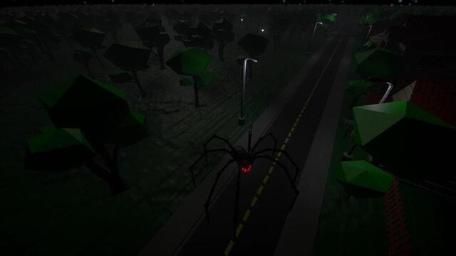
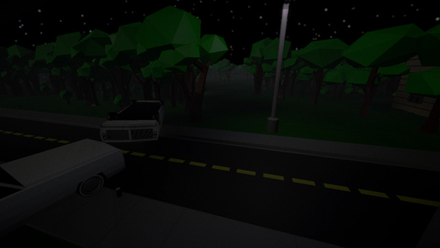
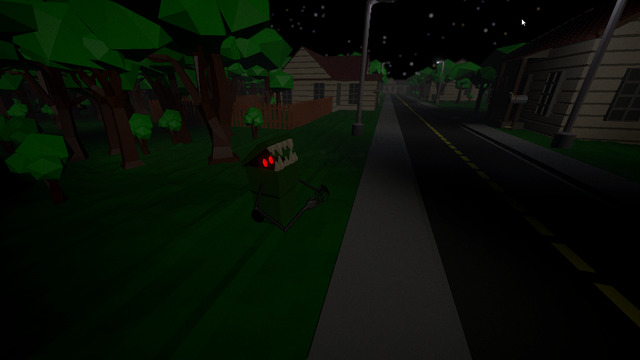

<div id="ajax-page" class="ajax-page-content">
    <div class="ajax-page-wrapper">
        <div class="ajax-page-nav">
            <div class="nav-item ajax-page-prev-next">
                <a class="ajax-page-load" href="goddamnhell.html"><i class="lnr lnr-chevron-left"></i></a>
                <!-- <a class="ajax-page-load" href="lurkersinthenightlight.html"><i class="lnr lnr-chevron-right"></i></a> -->
            </div>
            <div class="nav-item ajax-page-close-button">
                <a id="ajax-page-close-button" href="#"><i class="lnr lnr-cross"></i></a>
            </div>
        </div>

        <div class="ajax-page-title">
            <h1>Lurkers In The Nightlight</h1>
        </div>

        <div class="row">
            <div class="col-sm-12 col-md-12 portfolio-block">
                <!-- Project Description -->
                <div class="project-description" style="margin-left: 0px; margin-bottom: 30px;">
                    <div class="block-title">
                        <h3>Beschreibung</h3>
                    </div>
    
                    <p class="">Dieses Projekt entstand im Rahmen des Game Jams <a href="https://itch.io/jam/brackeys-7">"Brackey's Game Jam" </a>.
                    Für dieses Projekt hatten wir insgesamt 7 Tage Zeit. Das Theme des Game Jams war "It is not real".
                    </p>
                    <p>
                        Die Idee des Spiels ist ein Horror-Adventure, in dem man durch einen Wald laufen muss um nach Hause zu kommen. Unterwegs befinden sich jedoch gruselige Monster, welche den Spielenden umbringen möchten. Um dies zu verhindern, sollte man von einem Monster entdeckt werden, muss man mit der Taschenlampe auf diese Leuchten, damit sie sich in harmlose Varianten (wie beispielsweise eine kleine süße Spinne statt einer großen Spinne, oder einem Plüschbär statt einem großen Bär).
                    </p>

                    <br /> 
                    <p>
                        Meine Aufgaben in diesem Projekt waren das Implementieren von:
                    </p>
                    <ul>
                        <li>First-Person-Controller</li>
                        <li>Spielmechaniken</li>
                        <li>Musik</li>
                        <li>Level-Design</li>
                    </ul>
                    <!-- /Project Description -->
                </div>
                <!-- Project Description -->
            </div>
        </div>


        <div class="row">
            <div class="col-sm-8 col-md-8 portfolio-block">
                <div class="owl-carousel portfolio-page-carousel">
                    <div class="item">
                        
                    </div>
                    <div class="item">
                        
                    </div>
                    <div class="item">
                        
                    </div>
                    <div class="item">
                        
                    </div>
                    <div class="item">
                        
                    </div>
                </div>

                <script type="text/javascript">
                    jQuery(document).ready(function($){
                        $('.portfolio-page-carousel').imagesLoaded(function(){
                            $('.portfolio-page-carousel').owlCarousel({
                                smartSpeed:1200,
                                items: 1,
                                loop: true,
                                dots: true,
                                nav: true,
                                navText: false,
                                margin: 10,
                                autoHeight:true
                            });
                        });
                    });
                </script>
            </div>

            <div class="col-sm-4 col-md-4 portfolio-block">
                <!-- Project Description -->
                <div class="project-description" style="margin-left: 0px;">
                    <ul class="project-general-info">
                        <li><p><i class="fa fa-user"></i> Stefan Minikel, Diana Weber, Kevin Weber, Martin Köhler, Dillon Metzler, Ronja T., Jonas M.</p></li>
                        <li><p><i class="fa fa-globe"></i> <a href="https://stjpa.itch.io/lurkers-in-the-nightlight" target="_blank">itch.io/lurkers-in-the-nightlight</a></p></li>
                        <li><p><i class="fa fa-calendar"></i> 20.02.2022 - 27.02.2022</p></li>
                    </ul>
                    <!-- /Project Description -->

                    <!-- Technology -->
                    <div class="tags-block">
                        <div class="block-title">
                            <h3>Ressourcen</h3>
                        </div>
                        <ul class="tags">
                            <li><a>Unity</a></li>
                            <li><a>blender</a></li>
                            <li><a>Wwise</a></li>
                            <li><a>FL Studio 21</a></li>
                        </ul>
                    </div>
                    <!-- /Technology -->
                </div>
                <!-- Project Description -->
            </div>
        </div>
    </div>
</div>